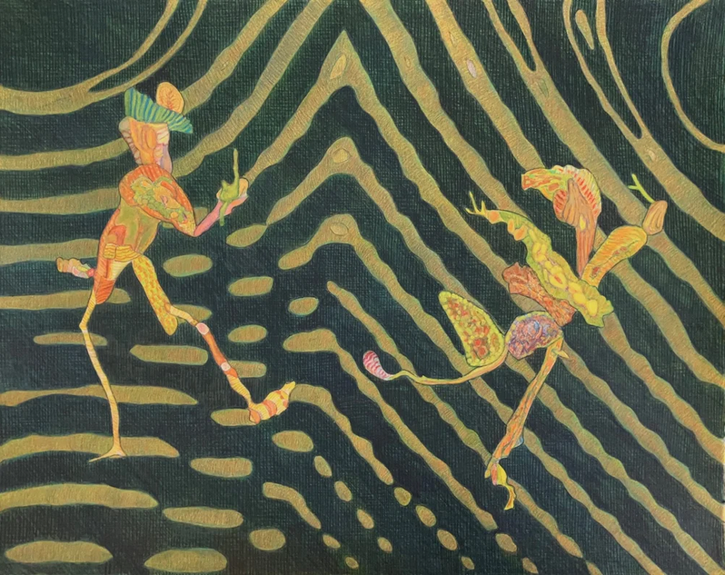

Iris Goldstein: A New Way of Seeing
Iris Goldstein, a long-time member of ARC Gallery is exhibiting colored-pencil drawings at the gallery in March 2026 Goldstein is always interested in the unusual and offbeat. Though she has been committed to nonobjective art, she tries to find visual images that are suggestive and allusive, based on real-life objects or places that are transformed through the artist’s imagination.
After years of creating painted plaster wall-relief sculptures, she is delighted to be immersed in the world of works on paper. These drawings are developed from the observations of natural objects in the woods of Maine. The artist always tries to find new ways of seeing that she hopes will find a response in the viewer. She views nature as a stimulus for her ideas and sees nature and art as common elements in her search for personal expression.
Goldstein studied sculpture at Smith College with Leonard Baskin, and she has an MFA from the School of the Art Institute of Chicago in drawing and painting. She has shown her work in Europe, Japan and China.